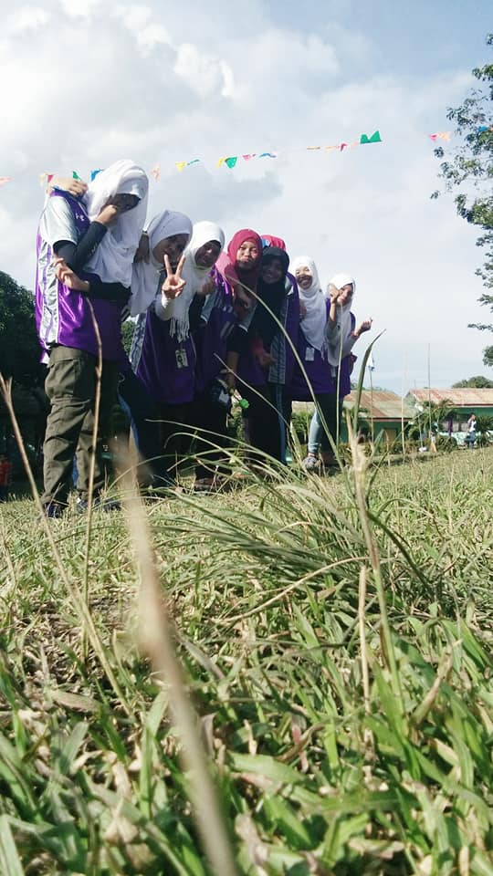
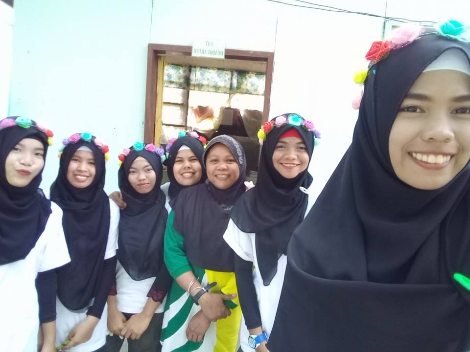
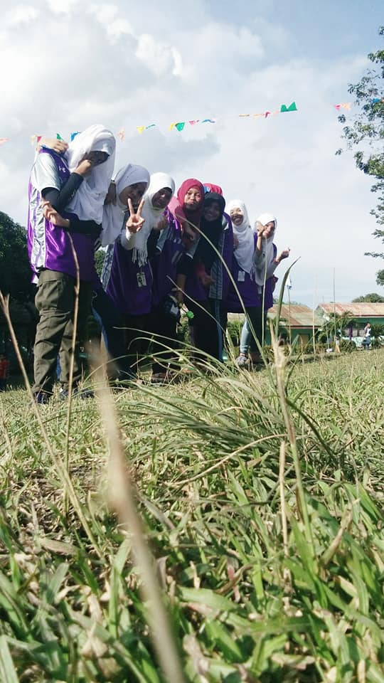
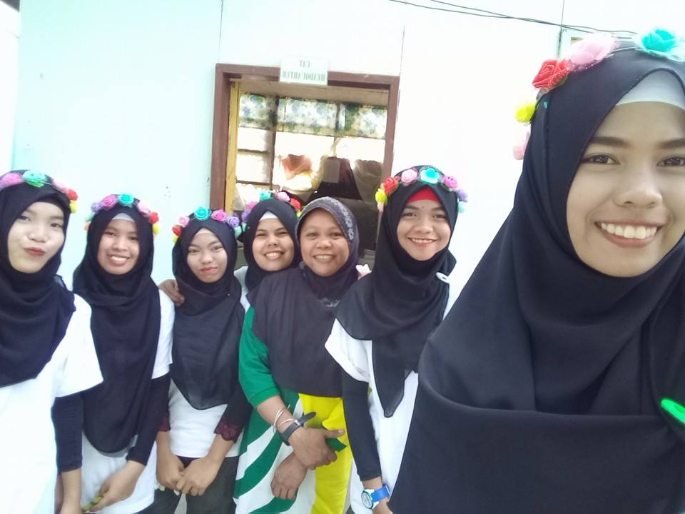

Happiness
Best friend is one of the blessing for each individual, even they will not sister by blood but sister by heart.They always have your back no matter what. When you want to cry your heart out but just smile like nothing happened, best friends are the people who can see the tears behind the smile.If you have any problem you can always tell about it to your best friend. You have one of the best times of your life with them. You can be yourself. No matter how crazy you are they will never judge you.Someone hurt you? No worries! Best friend at the rescue.Not everyone finds a best friend. Not everyone is that lucky. If you are one of those lucky people, don’t ever let your ego come in between.
I am happy that I am one of those lucky people!!
MY FAMILY
."Family' is a single word, with many different meanings. People have many ways of defining a family and what being a part of a family means to them. Families differ in terms of economic, cultural, social, and many other facets, but what every family has in common is that the people who call it a family are making clear that those people are important in some way to the person calling them his family.”